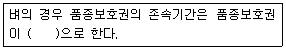
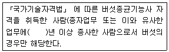

종자기사 (2011-08-21 기출문제)
1과목: 종자생산학
1. 적생광(670nm) 조건에서 종자의 발아가 촉진되는 작물로만 나열된 것은?
- 담배, 상추, 뽕나무
- 담배, 가지, 오이
- 담배, 상추, 양파
- 담배, 가지, 뽕나무
(정답률: 64%)

2. 다음 작물 중에서 일반적으로 수확적기의 종자 수분함량이 높은 순서로 배열된 것은?
- 옥수수 ＞ 벼 ＞ 콩 ＞ 귀리
- 콩＞ 옥수수 ＞ 벼 ＞ 보리
- 콩 ＞ 밀 ＞ 벼 ＞ 옥수수
- 옥수수 ＞ 벼 ＞ 밀 ＞ 콩
(정답률: 56%)
3. 채종 농가에서 일반적으로 채종하게 되는 것은?
- 원종
- 원원종
- 시판종자
- 기본식물
(정답률: 66%)
4. 꽃에서 발육하여 나중에 씨가 되는 부분은?
- 암술
- 배주
- 자방
- 꽃받침
(정답률: 72%)
5. 종자 발아능의 생화학적 검사에 대한 설명으로 틀린 것은?
- Tetrazolium검사는 휴면하지 않는 종자의 발아능을 검사할 수 있으나 휴면종자는 검사할 수 없다.
- Carmine이나 aniline 착색법은 수목 종자의 발아능 검사에 이용된다.
- 미숙한 종자의 caralase의 양은 완숙한 종자에서보다 많다.
- 기계적 상처를 입은 콩과작물의 종자를 ferric chloride 용액에 담가 두면 검은색으로 변한다.
(정답률: 84%)
6. 건열처리로 오이녹반모자이크바이러스(CFMMV)를 무독화하기 위한 최적 조건은?
- 65℃에서 1일간
- 70℃에서 3일간
- 80℃에서 1시간
- 80℃에서 3일간
(정답률: 60%)
7. 원종에 대한 설명으로 틀린 것은?
- 원원종에서 증식된 것이다.
- 보급종을 생산하는데 이용된다.
- 순도가 원원종보다 낮다.
- 성숙모본으로 채종한다.
(정답률: 52%)
8. 생식세포 형성과정의 설명 중 잘못된 것은?
- 대포자 시원체는 자방벽의 한 분열조직에서 시작한다.
- 대포자 시원체는 2배체(2n)의 세포에서 시작한다.
- 대포자는 반수체(n) 상태이다.
- 자성배우자형성세대는 시원체에서 대포자가 형성되기까지를 의미한다.
(정답률: 42%)
9. 종자 프라이밍(Priming)에 많이 이용되고 있는 화학물질은?
- H2O2
- KNO3
- GA3
- MgNO3
(정답률: 71%)
10. 종자전염성 병만 나열한 것은?
- 토마토 역병, 오이녹반모자이크병, 벼줄무늬잎마름병
- 벼줄무늬잎마름병, 옥수수잎마름병, 보리깜부기병
- 보리깜부기병, 오이녹반모자이크병, 양배추뿌리썩음병
- 양배추뿌리썩음병, 옥수수잎마름병, 토마토역병
(정답률: 49%)
11. 종자의 화학적 성분을 알려고 하는 중요한 이유가 되지 못하는 것은?
- 공업원료나 의약품의 재료
- 식량과 가축사료의 원료
- 저장력과 수명에 영향
- 생육 중 감광성 정도
(정답률: 71%)
12. 종자의 휴면 타파법이 아닌 것은?
- 황산처리
- 저온처리
- 고온처리
- Abscisicacid(ABA)처리
(정답률: 88%)
13. 종자 저장 시 수명에 가장 큰 영향을 미치는 것은?
- 종자의 크기
- 종자의 수분함량
- 종자 저장고의 온도
- 종자 저장고의 밀폐도
(정답률: 87%)
14. 양파가 타가수분을 하게 되는 주된 원인은?(오류 신고가 접수된 문제입니다. 반드시 정답과 해설을 확인하시기 바랍니다.)
- 자성불임성
- 웅성불임성
- 웅예선숙성
- 자방선숙성
(정답률: 40%)
15. 종자에서 제 2차 휴면을 일으키는 원인으로 가장 거리가 먼 것은?
- 건조
- 암조건
- 감마선
- 종피의 기계적 저항
(정답률: 42%)
16. 다음 중 종자의 모양이 다른 하나는?
- 무
- 파
- 양파
- 부추
(정답률: 68%)
17. 자연조건에서 종자의 수명이 가장 짧은 작물로 짝지은 것은?
- 양파, 벼
- 땅콩, 수박
- 벼, 수박
- 양파, 상추
(정답률: 73%)
18. 품종퇴화의 원인이라 할 수 없는 것은?
- 자연교잡
- 기계적 혼종
- 돌연변이
- 고정적 형질의 분리
(정답률: 64%)
19. 종자의 순도검사를 통하여 알 수 있는 것은?
- 종자표본의 발아능력
- 종자표본의 수분함량
- 종자표본의 정립비율
- 종자표본의 병해정도
(정답률: 85%)
20. 십자화과 채소의 종자가 저온처리의 효과를 받을 수 있는 함수량은?
- 20%
- 30%
- 40%
- 50%
(정답률: 39%)
2과목: 식물육종학
21. 신품종이 법적으로 보호받기 위한 품종보호 요건은?
- 신규성, 구별성, 균일성, 안정성, 고유한 품종명칭
- 신규성, 구별성, 균일성, 경제성, 고유한 품종명칭
- 신규성, 구별성, 광지역성, 안정성, 고유한 품종명칭
- 신규성, 구별성, 경제성, 광지역성, 고유한 품종명칭
(정답률: 79%)
22. 진핵세포에서 RNA전사는 어느 곳에서 일어나는가?
- 리보소옴
- 핵
- 골지체
- 액포
(정답률: 52%)
23. 3원 교잡이란?
- (A x B) x C
- (A x B) x (C x D)
- A x B x C x D x E
- [(A x B) x (C x D)] x E
(정답률: 78%)
24. 재배식물과 기원지를 연결한 것 중 틀린 것?
- 벼 - 중국남부 및 아샘지방 연결지역
- 콩 - 북아메리카
- 옥수수 - 중앙아메리카 및 멕시코 남부
- 감자 - 남미 페루지역
(정답률: 79%)
25. 야생종의 단순한 내병성 인자를 실용품종에 도입 하고자 할 때의 효과적인 육종법은?
- 여교잡 육종법
- 혼합(bulk) 육종법
- 계통 육종법
- 분리 육종법
(정답률: 86%)
26. 농산물의 품질은 여러 가지 특성이 복합되어 있다. 외관 특성에 해당하는 것은?
- 콩 종실의 배꼽색, 쌀의 수분함량
- 쌀의 수분함량, 감자의 전분가
- 감자의 전분가, 쌀의 심복백 정도
- 쌀의 심복백 정도, 콩 종실의 배꼽색
(정답률: 77%)
27. 상염색체 상에 존재하는 유전자가 성호르몬의 영향으로 자성과 웅성에 따라 표현형을 달리하는 경우, 이러한 유전현상은?
- 반성유전
- 한성유전
- 종성유전
- 연관유전
(정답률: 42%)
28. 변이를 일으키는 원인에 따라서 3가지로 구분할 때 옳은 것은?
- 방황변이, 개체변이, 일반변이
- 장소변이, 돌연변이, 교배변이
- 돌연변이, 유전변이, 비유전변이
- 대립변이, 양적변이, 정부변이
(정답률: 72%)
29. 수박 1통에 종자 150개가 결실되면 화분 몇 개가 필요한가? (단, 화분은 100% 수정되는 것으로 가정함)
- 1개
- 75개
- 100개
- 150개
(정답률: 77%)
30. 육성종을 농가에 보급할 때까지의 채종 체계를 기술한 것 중 옳은 것은?
- 계통선발→원원종→원종→일반채종→농가보급
- 원종→계통선발→원원종→일반채종→농가보급
- 원원종→원종→계통선발→일반채종→농가보급
- 원종→원원종→일반채종→계통선발→농가보급
(정답률: 72%)
31. 유전자 돌연변이에 관하여 옳게 표현한 것은?
- 유전하지 않는다.
- 자연상태에서는 발생하지 않으나 방사선을 쪼이면 쉽게 발생한다.
- 잡종강세는 이 현상을 이용하는 것이다.
- 대체로 열성 돌연변이가 많다.
(정답률: 50%)
32. 여교잡의 실시와 관련이 없는 것은?
- 특정 형질만을 도입하려고 할 때
- 동질 유전자계통을 선발하고자 할 때
- 이질 세포질을 이용하려고 할 때
- 잡종강세를 이용하려고 할 때
(정답률: 68%)
33. 1대 잡종 품종의 교배친으로 사용되는 자식계통에 대한 내용 중 틀린 것은?
- 유전 적으로 고정되어 있어야 함
- 조합능력이 우수해야 함
- 실용적인 우수형질을 구비하여야 함
- 자식약세가 크게 나타나야 함
(정답률: 73%)
34. 웅성불임계통 - 불임유지계통 - 임성회복계통을 모두 갖추어야 일대잡종품종 종자생산에 이용할 수 있는 웅성불임 체계는?
- 세포질적 웅성불임
- 유전자적 웅성불임
- 세포질-유전자적 웅성불임
- 환경반응 웅성불임
(정답률: 83%)
35. Marker 검정방법 중 재현성이 가장 낮은 것은?
- RAPD
- RFLP
- AFLP
- isozyme
(정답률: 46%)
36. 인위적인 방법으로 유전변이를 일으킨 경우는?
- 비료사용량을 조절하여 성숙기의 벼 도복을 방지하였다.
- Bt 유전자를 옥수수에 형질전환시켜 조명나방에 대한 내충성을 갖게 되었다.
- 전국의 산에 자생하는 더덕을 수집하여 향기가 많은 종을 선발하였다.
- 생장점배양을 통하여 바이러스가 없는 잠자 종서를 대량으로 증식하였다.
(정답률: 72%)
37. 유사분열(체세포분열)과 감수분열(생식세포분열)을 비교 할 때 차이가 없는 것은?
- 염색체의 자기복제
- 상동염색체 대합
- 분열이 일어나는 식물체 부위
- 분열 후 생성된 세포 각각의 염색체 수
(정답률: 44%)
38. 품종의 내병성 검정 시 고려해야 할 사항으로 가장 알맞은 것은?
- 농약의 종류, 병원균의 변이계통
- 병원균의 변이계통, 병원균의 인공접종법
- 병원균의 인공접종법, 농약사용량
- 농약사용량, 농약의 종류
(정답률: 63%)
39. 분리육종법의 이론적 근거는?
- 순계설
- 자연도태설
- 유전력
- 유전자 중심설
(정답률: 63%)
40. 체세포로부터 식물체가 재생되는 현상을 적절하게 설명한 것은?
- 식물의 세포분화능을 이용하는 것이다.
- 세포의 탈분화능을 이용하는 것이다.
- 기관형성능을 이용하는 것이다.
- 세포의 전체형성능을 이용하는 것이다.
(정답률: 77%)
3과목: 재배원론
41. 국화의 개화를 지연시키려면 어떠한 처리를 하여야 하는가?
- 장일처리
- 단일처리
- 고온처리
- 저온처리
(정답률: 66%)
42. 여름철에 벼가 장해형 냉해를 가장 받기 쉬운 시기는?
- 묘대기
- 분얼초기
- 수잉기
- 출수개화기
(정답률: 43%)
43. 국내 원예용 인공상토의 주요 원료인 코코피트(코이어더스트)의 특징이 아닌 것은?
- 100% 천연이끼에서 유래한 섬유질 용토로 환경공해가 없다.
- 통기성, 보수력, 보비력이 좋아 뿌리생장에 좋다.
- 값이 타 재료에 비해 저렴하고 취급이 간편하다.
- 토양 속에서 장기간 부패하지 않아 물리성을 개선시킨다.
(정답률: 49%)
44. 채소 재배에서 본 포장에 직파하는 것보다 육묘를 이용하는 것의 장점이 아닌 것은?
- 작물의 지하부(뿌리) 생육에 유리
- 포장의 이용효율 증대
- 접목재배가 가능
- 화아를 분화시키기 용이함
(정답률: 42%)
45. 작물의 일반분류법에 준하여 잡곡에 해당하지 않는 것은?
- 조
- 기장
- 귀리
- 옥수수
(정답률: 48%)
46. 토마토 식물체에 수분이 부족하면 기공을 닫아 위조저항성을 크게 하는 식물호르몬은?
- Abscisic acid
- Cytokinin
- Ethylene
- Phosfon-D
(정답률: 55%)
47. 개체군생장속도(crop growth rate)를 구하는 공식으로 옳은 것은?
- 엽면적 x 순동화율
- 엽면적지수 x 상대생장율
- 엽면적지수 x 순동화율
- 비엽면적 x 상대생장율
(정답률: 55%)
48. 장일 식물로 옳은 것은?
- 벼, 보리, 국화
- 국화, 무, 양배추
- 밀, 상추, 감자
- 벼, 밀, 상추
(정답률: 37%)
49. 화본과 식물에서 coleoptile(초엽)에 대해서 가장 잘 설명하고 있는 것은?
- 종자근을 감싸는 하배축의 밑 부분이다.
- 제 1본엽의 시원체가 되는 생장점조직이다.
- 발아시 안족의 정아를 보호하는 역할을 한다.
- 동물의 배꼽과 같은 역할로 동화산물 전류의 통로역할을 한다.
(정답률: 71%)
50. 요수량이 가장 큰 작물은?
- 옥수수
- 보리
- 수수
- 기장
(정답률: 42%)
51. 토마토의 화아분화에 대한 설명으로 틀린 것은?
- 파종 후 25~30일이 지나면 제1화방이 분화한다
- 줄기에서 9매의 잎이 분화되고 생장점이 비후하여 제1화방으로 분화한다.
- 제1화방과 9번째 잎 사이로 새로운 생장점이 형성되어 원줄기로 신장해 가는데, 이후 주로 3마디 간격으로 제2, 제3, ...화방이 순차적으로 착생한다.
- 육묘기에 양분이 부족하면 화아분화가 늦어지는데 특히 칼륨과 칼슘이 많은 영향을 준다.
(정답률: 50%)
52. 수해(水害)에 관한 다음 설명 중 틀린 것은?
- 벼에서 수잉기~출수개화기에는 수해에 매우 약하다
- 벼에서 7일 이상 관수될 때에는 다른 작물을 파종할 필요가 있다.
- 벼의 청고현상은 수온이 낮은 유동 청수(淸水)에서 볼 수 있는 현상이다.
- 질소질 비료를 많이 주면 탄수화물의 함량이 적어지고 호흡작용이 왕성하여 관수해가 더 커진다.
(정답률: 58%)
53. 벼가 담수조건에서도 잘 생육하는 가장 큰 원인은?
- 파생통기조직의 발달
- 뿌리 조직의 목질화
- 뿌리의 지근 발생
- 유해성 물질의 저항성
(정답률: 75%)
54. 벼 담수직파재배에서 과산화석회를 종자에 분의하여 파종하는 주목적은?
- 종자 소독
- 도복 방지
- 산소 공급
- 보온 효과
(정답률: 46%)
55. 교잡에 의한 작물개량의 가능성을 최초로 제시한 사람은?
- Kölreuter
- Mendel
- Morgan
- Liebig
(정답률: 45%)
56. 작물에 질소가 과잉상태로 되는 경우 작물체 내에서 일어나는 변화로 옳은 것은?
- C/N률이 올라가게 된다.
- 개화가 촉진된다.
- 세포벽이 두꺼워 진다.
- 아미드태 질소가 많아진다.
(정답률: 42%)
57. 도복(lodging)의 유발에 관한 설명이 틀린 것은?
- 키가 크고 대가 약한 품종일수록 도복이 심하다
- 칼리, 규산 다용은 도복을 유발한다.
- 밀식, 질소 다용은 도복을 유발한다.
- 가을 멸구의 발생이 많으면 도복이 심하다.
(정답률: 71%)
58. 토양미생물에 대한 설명 중 틀린 것은?
- Azotovbacter는 단독생활 질소고정 균이다.
- Nitrobacter는 탈질작용을 하는 균이다.
- Mycorrhizae는 식물의 양분흡수를 돕는다.
- Desulfovibrio는 황화수소를 발생한다.
(정답률: 38%)
59. 작물을 연작하였을 때 피해가 가장 적은 작물은?
- 수박
- 아마
- 인삼
- 벼
(정답률: 59%)
60. 토양의 입단은 영구적인 것이 아니고 여러 가지 요인에 의해 피괴되는데, 토양 입단의 파괴와 거리가 먼 것은?
- 토양의 통기를 좋게 하기 위한 경운 작업
- 비와 바람에 의한 토양 입단의 압축과 타격
- 온도에 의한 토양 입단의 팽창과 수축의 반복
- 토양을 피복하거나 피복작물 재배에 의한 유기물 공급
(정답률: 59%)
4과목: 식물보호학
61. 살충제 중에서 직접 접촉제가 아닌 것은?
- 제충국제
- 데리스제
- 니코틴제
- 드린제
(정답률: 35%)
62. 광합성 전자전달계를 저해하는 제초제가 아닌 것은?
- ures계
- triazine계
- propanil
- chiorsulfuron
(정답률: 50%)
63. 논의 군데군데에 집중고사현상(hopper burn)의 피해증상이 나타난다. 어느 해충의 피해인가?
- 애멸구
- 벼멸구
- 이화명충
- 끝동매미충
(정답률: 52%)
64. 바이러스가 침입할 수 있는 부위는?
- 상처
- 수공
- 각피
- 밀선
(정답률: 77%)
65. 사과나무 근두암종병을 일으키는 병원체는?
- 선충
- 세균
- 진균
- 바이러스
(정답률: 49%)
66. 분제에 있어서 주성분의 농도를 낮추기 위하여 쓰이는 보조제는?
- 전착제
- 증량제
- 유화제
- 협력제
(정답률: 56%)
67. 생활사에 따른 잡초의 분류에서 다년생 잡초는?
- 뚝새풀
- 쇠털골
- 물달개비
- 밭뚝외풀
(정답률: 56%)
68. 식물병원 세균의 주된 전파방법은?
- 토양
- 물
- 바람
- 종자
(정답률: 50%)
69. 화기전염을 하는 병원균은?
- 보리겉깜부기병균
- 보리속깜부기병균
- 밀비린깜부기병균
- 밀줄기녹병균
(정답률: 63%)
70. 작물의 종합적 방제를 위해서는 농업 생태계를 이해하여야 한다. 다음 중 농업 생태계에 대한 설명으로 틀린 것은?
- 농업 생태계는 자연 생태계에 비하여 군집의 종 다양성이 낮다
- 농업 생태계는 인위적인 요소가 크게 관여한다.
- 농업생태계를 구성하는 군집이 자연 생태계 보다 더 오래 유지된다.
- 농업생테계에서 작물은 자연생태계에서 보다 경쟁력이 강하다.
(정답률: 48%)
71. 농약의 보조제에 속하는 것은?
- 접촉제
- 유인제
- 유화제
- 기피제
(정답률: 67%)
72. 농약에 이용하는 약제 중 항생제 계통의 살균제는?
- 블라스티시딘 - S
- 석회보르도액
- 카롤린
- 세레산
(정답률: 52%)
73. 곤충에서 완전변태를 하는 것은?
- 메뚜기
- 매미
- 파리
- 총채벌레
(정답률: 66%)
74. 잡초의 일반적인 유용성(有用性)에 해당하는 것은?
- 주요 유전자원
- 병해충 매개
- 작업환경의 악화
- 작물과의 경쟁
(정답률: 69%)
75. 절대기생 식물병원균은?
- 노균병균
- 탄저병균
- 혹성병(검은별무늬병균)
- 도열병균
(정답률: 48%)
76. 식물병의 피해에 대한 설명으로 틀린 것은?
- 병해충, 잡초에 의한 세계 곡물 손실률은 10%이하 이다.
- 스리랑카에서는 커피 녹병으로 커피재배가 불가능했다.
- 균독소는 농산물의 품질을 저하시킨다.
- 막대한 병 방제비용도 일종의 식물병 피해이다.
(정답률: 69%)
77. 곤충 생태학을 알맞게 설명한 것은?
- 곤충의 발상지, 연대, 분포에 대한 연구
- 곤충의 대한 환경의 작용과 곤충의 반작용에 대한 연구
- 곤충의 호흡, 순환, 생식 등의 기능에 대한 연구
- 곤충의 생태 및 구조에 대한 연구
(정답률: 21%)
78. 곤충에서 불완전변태류의 어린 벌레를 일컫는 용어는?
- 유충
- 약충
- 과용
- 전용
(정답률: 54%)
79. 다음 중에서 화본과 잡초는?
- 참방동사니
- 벗풀
- 밭뚝외풀
- 나도겨풀
(정답률: 44%)
80. 곤충에게 영향을 미치는 환경요인과 관계가 먼 것은?
- 기상
- 먹이
- 생활장소(서식처)
- 생식능력
(정답률: 73%)
5과목: 종자관련법규
81. 품종보호심판위원회에 대한 설명 중 틀린 것은?
- 심판위원은 직무상 합의하여 심판하며, 심판위원의 자격은 농림수산식품부령으로 정한다.
- 품종보호에 관한 심판과 재상을 관장하기 위하여 농림수산식품부에 둔다.
- 품종보호심판위원회위원장을 포함한 8인 이내의 품종보호심판위원으로 구성한다.
- 합의제의 합의는 과반수에 의하여 이를 결정하고, 심판의 합의는 공개하지 않는다.
(정답률: 59%)
82. 다음 중 종자산업법의 목적이 아닌 것은?
- 유전자원의 수집 및 관리
- 신품종 육성자의 권리보호
- 주요 작물의 품종성능의 관리
- 종자의 생산 보증 유통 등에 관한 사항을 규정
(정답률: 42%)
83. 국가품종목록 등재 대상 작물로만 짝지어진 것은?
- 배추, 상추
- 밀, 참깨
- 호밀, 고구마
- 콩, 옥수수
(정답률: 72%)
84. 「특허법」 에 따라 심판위원회로부터 증거조사나 증거보전에 관하여 서류나 그 밖의 물건의 제출 또는 제시 명령을 받은 사람으로서 정당한 사유 없이 그 명령에 따르지 아니한 사람에게 해당되는 벌칙은?
- 1년 이하의 징역
- 2년 이하의 징역
- 500만원 이하의 과태료
- 50만원 이하의 과태료
(정답률: 52%)
85. 수출, 수입 또는 수입된 종자의 국내유통을 제한할 수 있는 경우가 아닌 것은?
- 수입된 벼 종자가 줄기가 짧은 유전적 특성을 보일 경우
- 수입된 종자에 유해 잡초가 농림수산식품부장관이 지정하는 기준 이상으로 포함된 경우
- 유전자 변형 등으로 인하여 농작물 생태계를 심각하게 파괴시킬 우려가 있는 경우
- 수입된 종자의 재배로 특정 병해충이 확산될 우려가 있는 경우
(정답률: 75%)
86. 국가목록등재 작물의 종자를 판매할 때 종자보증을 하지 않아도 되는 경우로 틀린 것은?
- 시험이나 연구 목적으로 쓰이는 경우
- 1대 잡종의 친 또는 합성품종의 친으로만 쓰이는 경우
- 증식 목적으로 판매한 후 생산된 종자를 판매자가 다시 전량 매입하는 경우
- 생산된 종자를 전체의 반은 무상 보급하고, 반은 수출 하는 경우
(정답률: 62%)
87. 다음 중 품종보호요건에 관한 설명으로 틀린 것은?
- 품종보호출원일 이전까지 일반인에게 알려져 있는 품종과 명확하게 구별되는 경우에는 구별성을 갖춘 것으로 본다.
- 품종의 본질적 특성이 그 품종의 번식방법상 예상되는 변이를 고려한 상태에서 충분히 균일한 경우에는 균일성을 갖춘 것으로 본다.
- 품종의 본질적인 특성이 반복적으로 증식된 후에도 품종의 본질적인 특성이 변하지 아니하는 경우 안정성을 갖춘 것으로 본다.
- 과수, 임목의 경우에 품종보호 출원일 이전에 종자가 국내에서 2년 이상 상업적인 목적으로 양도되지 않은 경우에 신규성을 갖춘 것으로 본다.
(정답률: 65%)
88. 다음 중 시·도지사가 종자업자에게 행정처분을 할 수 있는 위반사항은? (단, 위반시 행정처분은 1회 - 영업정지 90일, 2회 - 영업정지 180일, 3회 - 등록취소로 기준한다.)
- 종자업 등록을 한 날부터 1년 이내에 사업을 시작하지 아니하거나 정당한 사유 없이 1년 이상 계속하여 유합 한 경우.
- 농림수산식품부장관이 정하여 고시하는 작물의 종자로서 국내에 처음으로 수입되는 품종의 종자를 판매하기 위하여 수입하려는 자가 수입적응성 시험을 거치지 아니한 외국산 종자를 판매한 때
- 품종목록 등재대상작물의 종자를 수출하거나 수입하려는 자가 농림수산식품부장관에게 신고하지 아니하고 품종목록 등재대상작물의 종자를 수출하거나 수입한 경우
- 국가보증 대상이 아닌 종자나 자체보증을 받지 않은 종자를 판매하거나 보급하려는 자가 유통종자의 품질표시를 하지 아니한 경우
(정답률: 29%)
89. 종자산업법에서 종자보증 구분으로 맞는 것은?
- 정부보증과 개인보증으로 구분한다.
- 국가보증과 단체보증으로 구분한다.
- 정부보증과 기관보증으로 구분한다.
- 국가보증과 자체보증으로 구분한다.
(정답률: 77%)
90. 콩 포장검사 규격 중 특정병에 해당하는 것은?
- 모자이크병
- 세균성점무늬병
- 자주무늬병
- 탄저병
(정답률: 50%)
91. 종자업의 시설기준 중에서 실험실이 필요한 작물은?
- 채소
- 과수
- 화훼
- 사료작물
(정답률: 45%)
92. 품종목록 등재품종의 공고를 할 때 공보에 게재해야 할 사항이 아닌 것은?
- 품종의 명칭
- 품종의 성능 및 시험성적
- 종자생산자의 성명 및 주소
- 재배적응지역
(정답률: 49%)
93. 다음 중 국가품종목록에 등재하고자 할 경우 제출서류로서 틀린 것은?
- 종자생산계획서 1부
- 유전자 변형품종인 경우 환경 위해성 심사서 1부
- 품종의 사진 및 종자시료
- 품종목록 등재신청수수료 납부증명서 1부
(정답률: 63%)
94. 다음 중 품종보호권의 효력이 미치지 않는 경우가 아닌 것은?
- 자가소비만을 하기 위하여 보호품종을 실시하는 행위
- 다른 품종을 육성하기 위하여 보호품종을 실시하는 행위
- 실험 또는 연구를 하기 위하여 보호품종을 실시하는 행위
- 판매 목적으로 보호품종의 종자를 농업인에게 보급 행위
(정답률: 59%)
95. 다음 중 품종보호권이 취소할 수 있거나 취소하여야 하는 경우에 해당하지 않는 것은?
- 품종이 균일성이나 안정성을 충족할 수 없는 경우
- 보호품종의 유지의무를 이행하지 아니하는 경우
- 해당 품종의 품종명칭이 심사 후 이미 등록된 경우
- 해당 품종의 품종명칭의 등록이 취소된 경우
(정답률: 59%)
96. 다음 [보기]의 설명 중 알맞은 것은?

- 설정등록된 날부터 20년
- 설정등록된 날부터 25년
- 설정등록된 다음 날부터 25년
- 설정등록이 있는 날 한 달 후 부터 20년
(정답률: 70%)
97. 다음 [보기]의 종자관리사의 자격기준 설명 중 ( )안에 알맞은 것은?

- 1
- 2
- 3
- 5
(정답률: 71%)
98. 품종명칭으로 등록하기 위한 요건에 맞는 것은?
- 공공단체, 종교 또는 고인을 비방 또는 모욕할 염려가 있는 품종명칭
- 작물의 속 또는 종의 명칭을 사용하였거나 이와 혼동할 우려가 있는 품종명칭
- 해당 품종이 사실과 달리 다른 품종에서 파생되었거나 다른 품종과 관련이 있는 것으로 오인하거나 혼동될 염려가 있는 품종명칭
- 품종의 원산지를 오인 또는 혼동할 우려가 없는 명칭
(정답률: 67%)
99. 100kg의 포장물에서 소집단의 크기가 100대인 벼에서 1차 시료를 채취할 경우 몇 개소 이상의 1차 시료를 채위하여야 하는가?
- 총 20개소 이상
- 총 30개소 이상
- 총 40개소 이상
- 총 50개소 이상
(정답률: 36%)
100. 시장·군수는 종자업 등록을 취소하거나 6개월 이하의 기간을 정하여 그 영업의 정지를 명할 수 있다. 그 중 등록을 취소할 수 있는 경우에 해당되는 것은?
- 종자업 등록을 한 날부터 1년 이내에 사업을 시작하지 아니하거나 정당한 사유 없이 1년 이상 계속하여 휴업한 경우
- 종자업자가 본문을 위반하여 종자관리사를 두지 아니한 경우
- 거짓이나 그 밖의 부정한 방법으로 종자업 등록을 한 경우
- 수출·수입이 제한된 종자를 수출·수입하거나, 수입되어 국내유통이 제한된 종자를 국내유통한 경우.
(정답률: 46%)
담배는 광합성이 활발한 작물로, 적생광(670nm) 조건에서 발아가 촉진됩니다. 상추도 광합성이 활발한 작물 중 하나이며, 뽕나무는 봄철에 발아가 촉진되는 작물입니다.
하지만 가지와 양파는 광합성이 활발하지 않은 작물로, 적생광(670nm) 조건에서 발아가 촉진되지 않습니다. 따라서 정답은 "담배, 상추, 뽕나무"입니다.